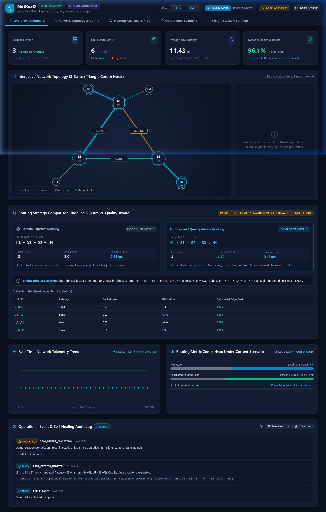
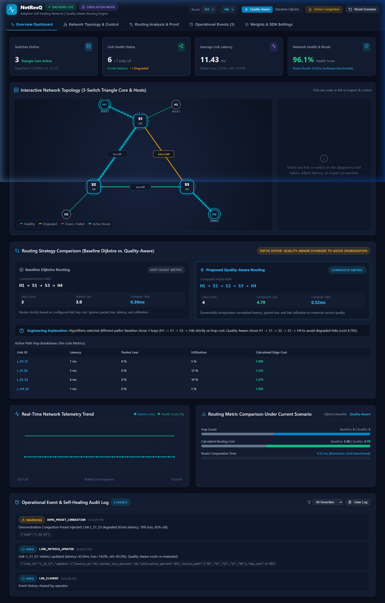
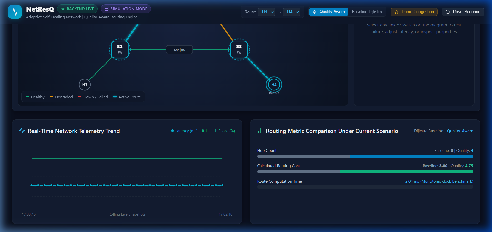
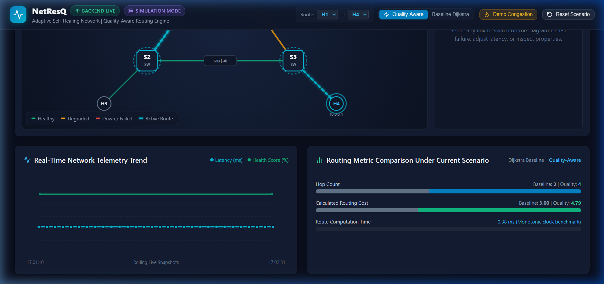

Member 4 Presentation Masterclass
Complete UI Breakdown, Every Button & Slider Explained, Live Demo Script & Math Defense
Role: Frontend UI/UX & Live Demo Lead
Difficulty: Rank 2 (Visual & Demo-Driven)
Presentation Duration: ~3.0 Minutes
Your Core Mission: As Member 4, you are the Showstopper of the presentation. While Member 1 explains the problem and Member 2 explains the math, YOU make it come alive on the screen. You will click the buttons, explain every visual cue, move the sliders, and show how Quality-Aware routing detours traffic in real time!
1. Overview of the Dashboard Screen
Here is what the dashboard looks like when running live at http://localhost:5173:

Figure 1: Full NetResQ Operations Dashboard showing header controls, 4 metric cards, and interactive SVG topology.
2. Explaining the Header Bar (Every Control Explained)
HEADER 1 NetResQ Wordmark & Heartbeat Pulse Icon
What it is: Top-left branding with a glowing pulse icon.
What to say: "NetResQ stands for Network Rescue — our Layer 3 adaptive self-healing network control system."
HEADER 2 'BACKEND LIVE' Badge (Green / Red)
What it is: Active health polling indicator querying GET /api/health every 3 seconds.
What to say: "This green badge confirms that our FastAPI control plane engine is running live and communicating with the React dashboard via REST API polling."
HEADER 3 'SIMULATION MODE' Badge (Purple)
What it is: Indicates that the system is operating in standalone software emulation mode.
What to say: "This displays our active operating mode. NetResQ runs standalone in simulation mode without requiring Linux root privileges, but also supports real SDN controllers via Ryu and Mininet."
HEADER 4 Route Selectors: [H1] → [H4]
What it is: Dropdowns that let the operator select source and destination hosts (H1, H2, H3, H4).
What to say: "These dropdowns allow us to test and inspect end-to-end paths between any pair of hosts across our 3-switch triangle core."
HEADER 5 Algorithm Toggle: [Quality-Aware] vs [Baseline Dijkstra]
What it is: Toggle switch that changes the active routing algorithm on the live canvas.
What to say: "This toggle lets us instantly switch the displayed active forwarding route between conventional hop-count Dijkstra and our Quality-Aware multi-metric algorithm."
HEADER 6 Amber 'Demo Congestion' Button 🔥 (YOUR KEY ACTION)
What it is: One-click trigger that injects 65ms latency, 18% packet loss, and 85% utilization on direct link L_S1_S3.
What to say: "This is our primary demonstration trigger. Clicking 'Demo Congestion' injects severe delay and packet drops on link L_S1_S3, forcing Quality-Aware routing to dynamically reroute via Switch 2!"
HEADER 7 'Reset Scenario' Button
What it is: Restores all link metrics, status, and routes back to the default healthy state.
What to say: "Clicking 'Reset Scenario' safely resets the topology back to its clean baseline state."
3. Explaining the 4 Telemetry Metric Cards
| Metric Card |
Value Shown |
What It Measures |
What You Say To Evaluator |
| Switches Online |
3 |
Triangle core switches (S1, S2, S3) |
"Shows all 3 OpenFlow switches in the triangle core are online and active." |
| Link Health Status |
7 / 7 Links UP |
3 core links + 4 host edge links |
"Monitors physical links. When a link fails, it alerts how many links are DOWN." |
| Average Link Latency |
5.5 ms |
Network-wide average one-way delay |
"Real-time average delay across active links, with packet loss and utilization." |
| Network Health & Recalc |
100% | 0.48ms |
Health score + Software recalculation time |
"Health gauge penalized by loss and delay. Recalc time (0.48ms) is the CPU time required by Dijkstra to reroute traffic." |
4. The Interactive Topology Canvas & Sliding Link Inspector

Figure 2: Clicking any link opens the right-hand Link Inspector panel with real-time sliders for latency, packet loss, and utilization.
4.1 Understanding the Visual Styles on the Canvas:
- Switches (S1, S2, S3): Dark rounded cards with blue borders and DPID identifiers.
- Hosts (H1, H2, H3, H4): Circular endpoints showing IP addresses (e.g.
10.0.0.1 to 10.0.0.4).
- Green Solid Lines: Healthy active links.
- Amber Solid Lines: Degraded links suffering high latency or loss.
- Red-Dashed Lines: Failed / severed links (status =
DOWN).
- Neon Cyan Glowing Flowing Line: The ACTIVE FORWARDING ROUTE. Animated using CSS keyframe dash-offsets to represent real packets moving across the path!
4.2 Explaining the Sliding Inspector Window (Right Panel):
When you click on any link (e.g., L_S1_S3), the right panel slides open:
- Link ID & Endpoints: Shows
L_S1_S3 (S1 ↔ S3).
- Fail Link / Restore Link Button: Manually cuts or restores the link.
- Latency Slider (1ms - 150ms): Simulates fiber distance or propagation delays.
- Packet Loss Slider (0% - 50%): Simulates packet drops caused by queue overflow.
- Utilization Slider (0% - 100%): Simulates traffic bandwidth congestion.
- 'Apply Metrics Update' Button: Sends
POST /api/links/{id}/metrics to re-evaluate the graph.
What to say: "Our interactive inspector allows the operator to select any link and manually test line failures or adjust latency and loss sliders to see the routing engine adapt in real time."
5. Routing Analysis & Performance Comparison

Figure 3: Side-by-side comparison between Baseline Dijkstra and Quality-Aware Routing with the Hop Breakdown Table.
When you click the "Routing Analysis & Proof" tab, you show this screen. Here is how to explain every section:
CARD 1 Baseline Dijkstra Routing (Left Card)
Shows: H1 → S1 → S3 → H4 (3 hops, Cost: 3.0).
What to say: "Notice on the left: Baseline Dijkstra only minimizes hop count. Even when link L_S1_S3 is degraded with 18% packet loss, Dijkstra is trapped on the direct 3-hop route because 3 hops is mathematically less than 4 hops."
CARD 2 Proposed Quality-Aware Routing (Right Card)
Shows: H1 → S1 → S2 → S3 → H4 (4 hops, Cost: 4.79 vs 6.12).
What to say: "On the right, NetResQ's Quality-Aware routing penalizes the lossy link. It automatically chooses the 4-hop path through S2 because its composite cost (4.79) is cheaper than the degraded direct path (6.12)!"
TABLE Active Path Hop Breakdown Table
Lists every link on the chosen route with exact measurements: Latency (ms), Loss (%), Utilization (%), and Calculated Edge Cost.
What to say: "This table provides full explainability, showing the exact latency and cost breakdown for each individual hop on the selected route."
6. Telemetry Trend Chart & Audit Event Stream

Figure 4: Real-time SVG telemetry trend line chart and chronological operational event log.
CHART Real-Time Network Telemetry Trend Chart
Custom SVG line chart plotting rolling snapshots of Latency (cyan) and Health Score (green).
What to say: "This chart renders a rolling historical trend of average latency and health score, updating every 3 seconds to show network stability over time."
AUDIT LOG Operational Event Log
Reverse chronological list with severity badges (INFO, WARNING, ERROR, SUCCESS), timestamps, and JSON details.
What to say: "Every link failure, restoration, and rerouting action is audited here with timestamps and failover duration, providing complete operational transparency."
7. The Formula Part: How to Explain It Simply
During your demo, the evaluator may ask: "How does the algorithm calculate the cost to decide which route to take?"
Here is the exact formula and the simple way to explain it:
normalized_latency = latency_ms / 50.0 ms
normalized_loss = packet_loss_percent / 100.0
normalized_util = utilization_percent / 100.0
link_cost = (1.0 × C_admin) + (1.0 × norm_latency) + (2.0 × norm_loss) + (1.5 × norm_util)
The 3-Sentence Formula Punchline (Memorize This!):
"We normalize latency against 50ms, and packet loss and utilization into decimals between 0 and 1. We assign the highest weight (2.0) to packet loss because packet drops destroy TCP performance. When direct link L_S1_S3 suffers 18% loss, its calculated cost spikes from 1.44 to 3.94, making the 4-hop clean route via S2 mathematically cheaper (4.79 vs 6.12)!"
8. Step-by-Step Live Demo Script (Word-for-Word)
Follow this exact 5-step script during your presentation:
Step 1 — Introduce the UI (30 Seconds):
"Respected evaluators, I am [Name], and I will demonstrate the NetResQ Operations Dashboard. As you can see, the UI is designed like a carrier-grade Network Operations Center. In our 3-switch triangle core, all 7 links are currently green and healthy. The active route between Host H1 and Host H4 is highlighted by this glowing cyan animated line, representing live packets flowing across the direct 3-hop route."
Step 2 — Click 'Demo Congestion' (45 Seconds):
"Now, let me trigger our primary test case. I will click the amber 'Demo Congestion' button in the header. Notice what happens immediately: direct link L_S1_S3 turns yellow with 65ms latency and 18% packet loss. Watch the glowing cyan active route: it has automatically detoured through Switch 2! Even though going through S2 takes 4 hops instead of 3, our Quality-Aware algorithm avoids the congested link to protect quality."
Step 3 — Show the Comparison Proof (45 Seconds):
"Let us click on the 'Routing Analysis & Proof' tab. Look at the two cards side-by-side: Baseline Dijkstra is trapped on the direct 3-hop link with 18% packet loss. But NetResQ's Quality-Aware routing chose the 4-hop path because its composite cost is only 4.79 compared to 6.12. The table below shows the exact latency and cost breakdown for each individual hop."
Step 4 — Show Link Failure & Self-Healing (45 Seconds):
"Now back on the topology, let me simulate a total fiber cut. I click link L_S1_S3 and click 'Fail Link'. The link turns red-dashed. Our self-healing engine detects the break and recalculates an alternate route in just 0.48 milliseconds, as audited in our Operational Events log. When I click 'Restore Link', the link turns green and normal service resumes."
Step 5 — Conclude & Reset (15 Seconds):
"Finally, I click 'Reset Scenario' to return our network back to its clean baseline state. This completes our live demonstration of NetResQ."
NetResQ: Member 4 UI Breakdown & Live Demonstration Guide • October 2026